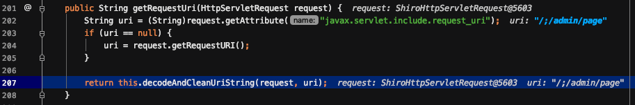

今年出现了三个shiro权限绕过漏洞，后来出现的两个漏洞与之前分析过的CVE-2020-1957这个漏洞原理一样，都是在spring框架下，由于shiro处理uri与spring处理uri不一致导致的。这篇文章介绍了与之相关，目前已经出现的4个漏洞。
漏洞描述
在spring框架使用shiro进行鉴权时，由于处理uri的逻辑不一致，导致权限绕过。
影响版本
- shiro-682 shiro < 1.5.0
- CVE-2020-1957 shiro <= 1.5.1
- CVE-2020-11989 shiro < 1.5.3
- CVE-2020-13922 shiro < 1.6.0
在shiro 1.6.0以下版本中存在可以绕过鉴权的可能。
分析复现
复现环境参考:https://github.com/l3yx/springboot-shiro
在shiroConfig中设置的ant风格URL匹配为/*而不是/**:
1 |
|
shiro-682
前面有对shiro-682进行过详细分析，由于shiro对于URL路径表达式只能正确匹配到/resource/menus，而无法匹配到/resource/menus/，同时对于spring来说，/resource/menus和/resource/menus/是一样的，导致了权限绕过。传送门CVE-2020-1957 Shiro权限绕过漏洞分析。
payload形式为/index/admin/
修复方式:
在1.5.0版本中，在获取到URL后，将最后一个/去掉再进行URL匹配。
CVE-2020-2957
在shiro-682进行了修复之后，依然是在shiro处理URL的地方，shiro会判断URI中是否有;，若有，则截取;之前的值作为URL；但是spring中却是截取;之后的URI，从而绕过了鉴权。传送门CVE-2020-1957 Shiro权限绕过漏洞分析。
payload的形式为/xxx;/index/admin
修复方式
在1.5.2版本中，将request.getRequestUri直接获取URI的方式更改为获取request.ContextPath，request.ServletPath，request.PathInfo，再将这三者进行拼接。看看这三者的区别:
1 | getContextPath() //获取该项目的根路径 |
ServletPath获取到的是;以后的URI，针对于/xxx;/index/admin的情况，获取到的uri值为//index/admin，因此无法使用;进行绕过。
CVE-2020-11989
前面对CVE-2020-2957进行了漏洞修复之后，还是存在绕过的方式。
漏洞复现
环境中实现的效果是当访问/admin/page下的路径时，若未登录，则会跳转到登录页面。如下所示
当采用如下的路径时/;/admin/page，会绕过认证。
别人提出了采用url双编码的方式也能绕过，双重编码的url在进入应用程序时，会进行解码一次，但是在我实验时并未进行一次解码。
漏洞分析
首先看一下Shiro对于URL的获取以及处理。定位在org.apache.shiro.web.filter.mgt.PathMatchingFilterChainResolver#getChain。
跟进getPathWithinApplication()方法。
继续跟进WebUtils.getPathWithinApplication()方法。
首先获取当前contextPath，由于在根目录下，这里为空。然后调用getRequestUri()方法获取requestUri。跟进getRequestUri()。
首先调用了request.getAttribute(“javax.servlet.include.request_uri”)，这里返回的结果为null，进入request.getRequestURI()。
request.getRequestURI()获取到的还是正常的输入的path，那么问题就是出现在了normalize(decodeAndCleanUriString(request, uri))上。跟进decodeAndCleanUriString()方法。
在这里，当出现;时，只取;前面部分作为uri进行认证鉴权。
鉴权完成之后，该request请求就会进入spring中，spring处理url函数定位在 org.springframework.web.util.UrlPathHelper#getPathWithinServletMapping。
跟进getRequestUri()方法。

继续进入decodeAndCleanUriString()方法。
看这里的函数名，第一个是removeSemicolonContent()，作用是移除;。跟进
这里移除了;。整个路径变成了//admin/page。接着跟进getSanitizedPath()方法。
这里正好将//变为一个/。最后的路径为/admin/page。正好能够访问到资源。
漏洞修复
在1.5.3版本中，getPathWithinApplication()中获取uri改为了由ServletPath + PathInfo，去掉了Context，且不再进行url解码。
CVE-2020-13922
前面对漏洞进行了修复。但是仍然出现问题，
漏洞复现
该漏洞需要配置的controller如下所示:
1 | ("/admin/{name}") |
即/admin/后面无论跟什么字符串，都是可访问到admin页面的。
这次的绕过就是将;进行编码后，就能绕过权限。
漏洞分析
前面的payload为/admin/%3bpage，首先来看看它是如何绕过shiro，再来看看spring是如何将其处理为/admin/xxx的。
定位于org.apache.shiro.web.util.WebUtil#getPathWithinApplication()。
首先通过getServletPath获得了解码后的/admin/;page。然后跟进removeSemicolon()方法。
经过去除分号的处理后，变为/admin/回到org.apache.shiro.web.filter.mgt.PathMatchingFilterChainResolver#getChain()。
在这里首先会将最后一个/去掉，然后匹配模式，由于未匹配到/admin/*，因此绕过了shiro的认证鉴权。
再来看看spring的处理，定位于org.springframework.web.util.UrlPathHelper#getRequestUri()。
它获取到的是未解码的uri，然后进入decodeAndCleanUriString()中。
在这里面的一个过程是，先移除分号，再进行uri解码操作。因此分号被保留了下来，最后返回的是/admin/;page，因此能够访问到hello admin页面。
漏洞修复
在 org.apache.shiro.web.filter添加了一个InvalidRequestFilter类，该类从全局上对 ; \ 以及非ASCII字符进行过滤。